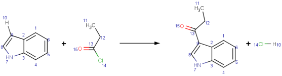
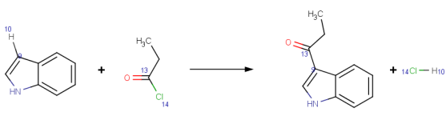
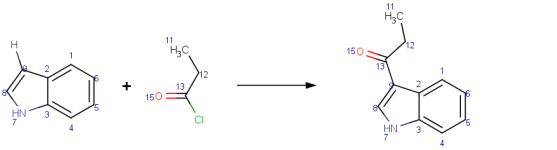
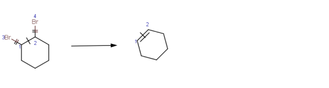

AutoMapper is a tool that performs automated chemical reaction mapping. It assigns atom maps to the atoms of a reaction, so that the same map number will identify the corresponding atoms on the two sides of the reaction arrow (reactant side and product side). Atom mapping reflects the mechanism of the reaction.
AutoMapper provides the following features:
Automapper is integrated into and used by the following ChemAxon products:
AutoMapper algorithm is based on Maximum Common Substructure (MCS) and Minimal Chemical Distance (MCD) algorithms.
Example 1: Comparison of different mapping styles
|  | Fiedel-Crafts acylation of indole with propionyl chloride. Mapping style: Complete All atoms of the reaction are mapped. |
|  | Fiedel-Crafts acylation of indole with propionyl chloride. Mapping style: Changing AutoMapper maps atoms connecting to forming and breaking bonds. |
| Fiedel-Crafts acylation of indole with propionyl chloride. Mapping style: Matching AutoMapper's Matching style maps atoms present on both sides of the reaction. In a balanced chemical reaction, Matching style mapping does not differ from Complete style mapping. |
|
|  | Fiedel-Crafts acylation of indole with propionyl chloride. Mapping style: Matching AutoMapper's Matching style maps atoms present on both sides of the reaction; see missing map numbers on explicit hydrogen and chlorine on the reactant side. |
Example 2: Demonstration of reaction center bond marks and Changing mapping style
|  | Dehalogenation of 1,2-dibromocyclohexane Mapping style: Changing Bonds between atoms 1 and 3, and between atoms 2 and 4 have broken in this reaction, while bond between atoms 1 and 2 has changed from single to double bond. |